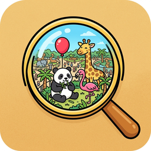
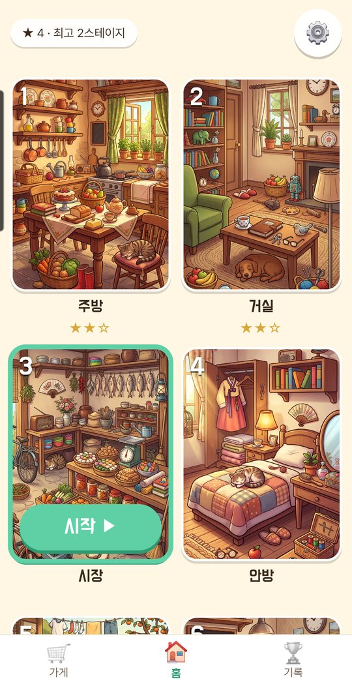
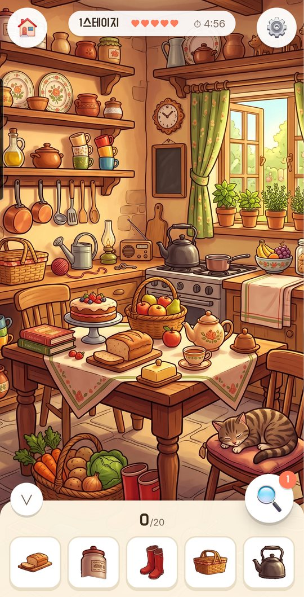
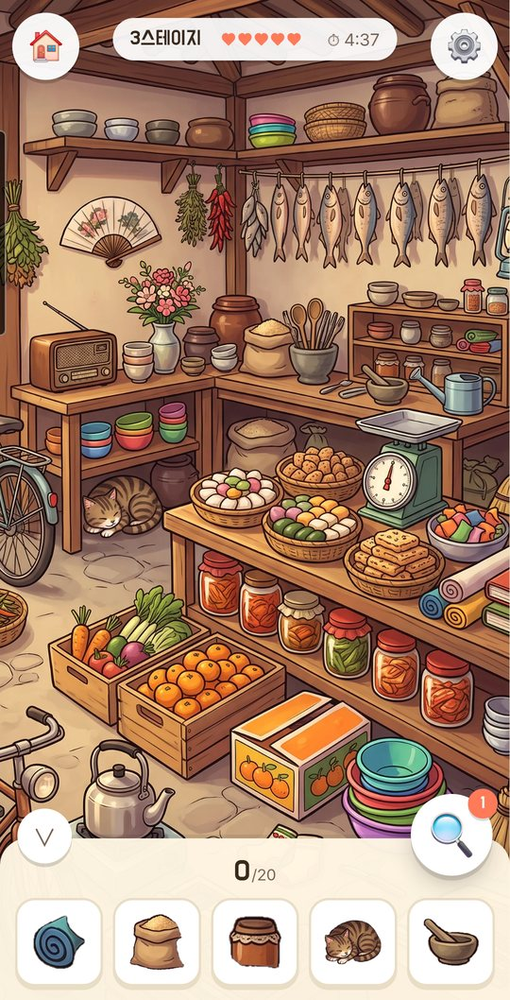

막히면 힌트
판마다 한 번은 그냥 씁니다. 그 뒤로는 짧은 광고를 보고 더 받거나, 가게에서 묶음으로 살 수 있습니다.
숨은그림찾기

따뜻한 손그림 속에서
숨은 물건을 찾습니다.
주방, 거실, 시장처럼 정겨운 장면 하나가 화면에 다 들어옵니다. 아래 목록에 나온 물건을 그림 속에서 찾아 누르면 됩니다. 물건이 크고 또렷해서 눈을 가늘게 뜨지 않아도 되고, 더 자세히 보고 싶으면 두 손가락으로 키우거나 끌어서 봅니다.
시간이 다 되어도 실패하지 않습니다. 시계는 별을 매길 때만 씁니다.
방 스무 곳을 차례로 돕니다. 한 바퀴를 돌아 같은 장면이 다시 나와도 그때는 다른 물건을 찾습니다. 판 번호가 같으면 언제나 같은 판이라, 다시 하기를 눌러도 방금 그 판이 그대로 나옵니다.
서두르지 않고, 한 판씩 편하게 찾는 게임입니다.



판마다 한 번은 그냥 씁니다. 그 뒤로는 짧은 광고를 보고 더 받거나, 가게에서 묶음으로 살 수 있습니다.
시계가 0이 되어도 계속 찾을 수 있습니다. 걸린 시간은 별 개수에만 영향을 줍니다.
판마다 별을 최고 세 개까지 받습니다. 아쉬운 판은 다시 해서 채울 수 있습니다.
계정을 만들지 않습니다. 진행 상황은 기기 안에만 저장되고, 광고를 빼면 인터넷 없이도 놉니다.